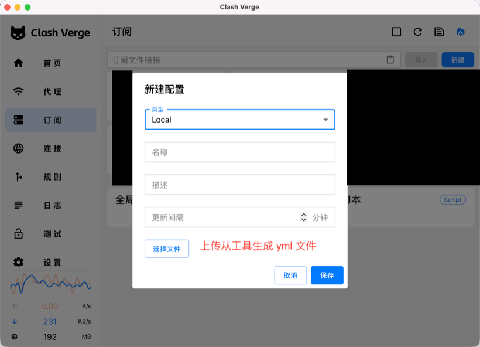
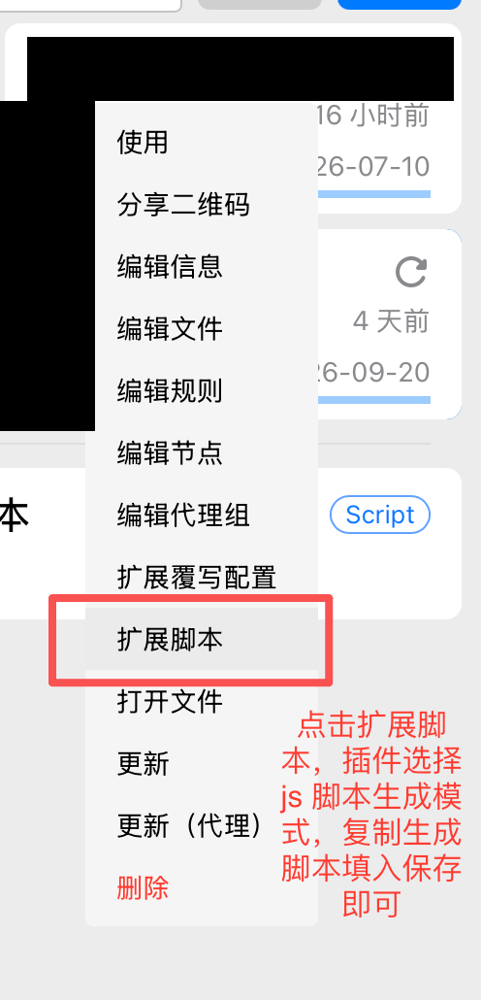
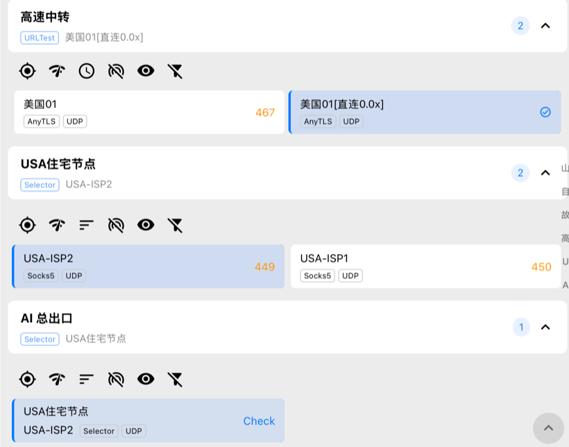
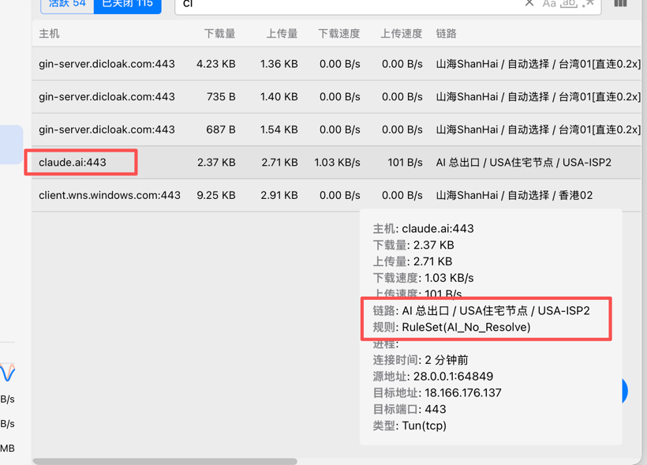

1. 输入订阅
由本地 Node 后端代理拉取，绕过浏览器 CORS。
等待输入…
2. 高速中转分组
请先加载订阅
节点命名规则：
- 单行：节点名 =
- 多行：节点名 =
- 显式命名：行首加
UDP 默认开启。
- 单行：节点名 =
前缀 本身（默认 住宅）- 多行：节点名 =
前缀-序号（如 住宅-1、住宅-2）- 显式命名：行首加
name|，如 美国静态住宅-B2proxy|host:port:user:passUDP 默认开启。
高级：直接用 JSON 数组（优先级高于上面的行输入）
2.5 直连住宅订阅（无需中转）
由本地后端代理拉取，与上方主订阅互不影响。
请先拉取/解析住宅订阅
等待住宅订阅…
3. AI / Claude 出口规则
直连：填 直连住宅（分组）或 [直连] 具体节点 → AI 直接从美国住宅出，不经中转。需先在「2.5 直连住宅订阅」勾选节点，否则下拉里不会出现。
中转：填 住宅节点（分组）→ 在分组内切换 proxywing1/2/… 改变出口 IP；填具体节点名则钉死到该节点。
勾选后把上面的「出口目标」选成
AI 总出口。组内成员：直连住宅（默认）/ 住宅节点，在客户端该组里切换即可在直连↔中转间换。只有当至少有一个直连或中转住宅时才会生成。支持：
DOMAIN / DOMAIN-SUFFIX / DOMAIN-KEYWORD / IP-CIDR / IP-CIDR6 / IP-ASN 等；末尾修饰符（如 no-resolve）会被保留。目标名由生成器自动插入到 matcher 之后。会生成
rule-providers 条目并前置 RULE-SET,<name>,<target> 规则。behavior 默认 classical，interval 默认 259200(3天)，type 固定 http。留空=不生成。所有 DNS 走加密 DoH + fake-ip，从根源防止 DNS 泄漏。参考 七尺鱼 DNS 防泄漏方案。推荐开启。境外 DNS 同时使用 8.8.8.8 + 1.1.1.1 双 DoH 上游并发，单点抖动时无感切换。
默认只监听
127.0.0.1:1053，仅本机使用，防止同网段他人蹭用或反查你的 DNS 记录。仅当你想让家里其他设备/软路由把 DNS 指向这台机器时勾选。不开 TUN 时，系统级应用（CLI、Docker、未走代理的 App）的 DNS 仍可能绕过本配置直接问运营商 → 防泄漏只能"半生效"。开启后会强制
tun.enable: true / dns-hijack: any:53，全系统 DNS 都被劫持到 1053。首次启用需管理员授权（macOS 需允许系统扩展、Windows 安装 wintun），且可能与企业 VPN / Docker 网络冲突，按需勾选。高级：特定端口代理入口（指纹浏览器 → 最终出口节点）
目标应填住宅节点名（最终出口），不要填中转分组——中转组只是 dialer-proxy 跳板。
例：AdsPower 连
例：AdsPower 连
socks://127.0.0.1:1080 → 目标填 美国静态住宅-B2proxy 或 住宅-1。
高级：用户自定义扩展 Hook（可选，main(params) 形式，会串联到输出末尾）
此处不是最终输出，而是**追加**到生成结果上的自定义变换 hook。
YAML 输出：在服务端 vm 沙箱中执行；
JS 输出：原样嵌入到生成脚本末尾（IIFE 隔离，内部可自定义一个 main 函数）。
YAML 输出：在服务端 vm 沙箱中执行；
JS 输出：原样嵌入到生成脚本末尾（IIFE 隔离，内部可自定义一个 main 函数）。
4. 生成
YAML：一次性生成完整代理配置，导入后即独立运行，不依赖原订阅。
JS 脚本：只封装变换逻辑，挂在原订阅上，订阅更新后变换自动重新生效；推荐。
JS 脚本：只封装变换逻辑，挂在原订阅上，订阅更新后变换自动重新生效；推荐。
Export for ClashMi：一键生成 ClashMi（mihomo 内核）兼容的完整 YAML 并下载，文件名
clashmi-config-*.yml。无需先点"生成"。
等待生成…
选中节点统计：0
📖 如何导入 Clash Verge（两种方式）
方式一 · 文件模式（对应「完整 YAML」）
生成后点下载得到配置文件 → 在 Clash Verge「订阅」页点新建，类型选
⚠️ 缺点：订阅节点更新后，需要重新生成并重新导入文件，不方便。
方式二 · 脚本扩展方式（推荐）（对应「JS 覆写脚本」）
导入后效果
生成后点下载得到配置文件 → 在 Clash Verge「订阅」页点新建，类型选
Local，上传该 yml 文件即可。⚠️ 缺点：订阅节点更新后，需要重新生成并重新导入文件，不方便。

方式二 · 脚本扩展方式（推荐）（对应「JS 覆写脚本」）
- 把「输出格式」选成
JS 覆写脚本，点生成，再点复制拿到脚本代码； - 在 Clash Verge 里先导入你的订阅；
- 在该订阅上点右键 → 选择「扩展脚本」；
- 把复制的扩展脚本代码填入 → 保存即可。

✅ 优点：订阅节点更新后自动重算，无需每次重做。导入后效果

▲ 自动生成的分组：高速中转 / 住宅节点 / AI 总出口

▲ AI 流量（claude.ai）实际经 AI 总出口 → 住宅节点 → USA-ISP2 出站
5. 输出预览
（生成后显示）